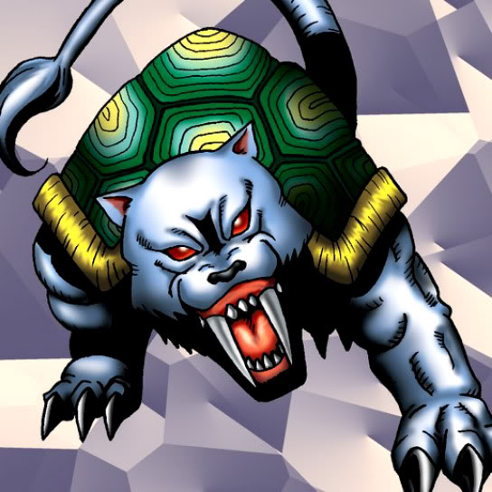

Turtle Tiger

STATS
ATK: 1000
DEF: 1500DECK COST
Deck Cost per Card: 25Fusion List (8 Possible Fusions)
- Turtle Tiger + Bolt Penguin = Bolt Escargot
- Turtle Tiger + Haniwa = Boulder Tortoise
- Turtle Tiger + Kappa Avenger = Hyosube
- Turtle Tiger + LaLa Li-oon = Bolt Escargot
- Turtle Tiger + Muka Muka = Boulder Tortoise
- Turtle Tiger + Petit Dragon = Spike Seadra
- Turtle Tiger + Winged Dragon, Guardian of the Fortress #2 = Turtle Bird
- Turtle Tiger + Yamatano Dragon Scroll = Spike Seadra